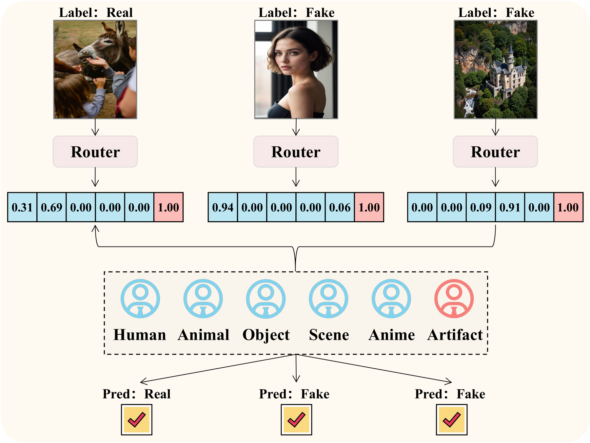
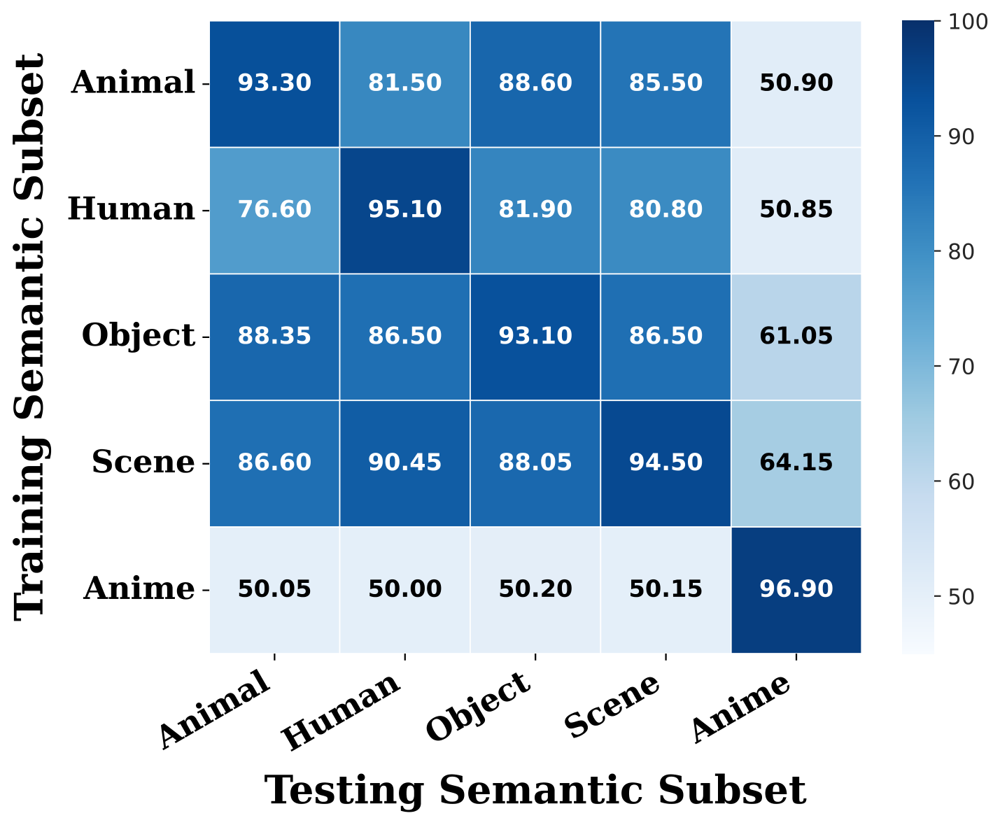
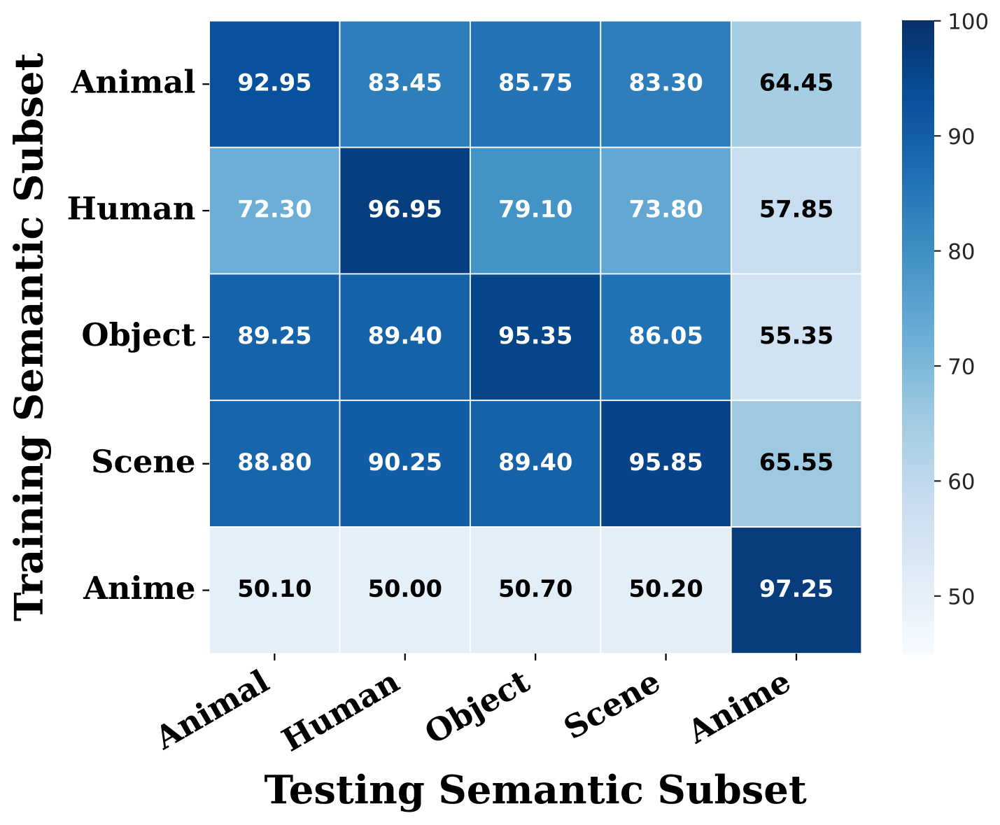
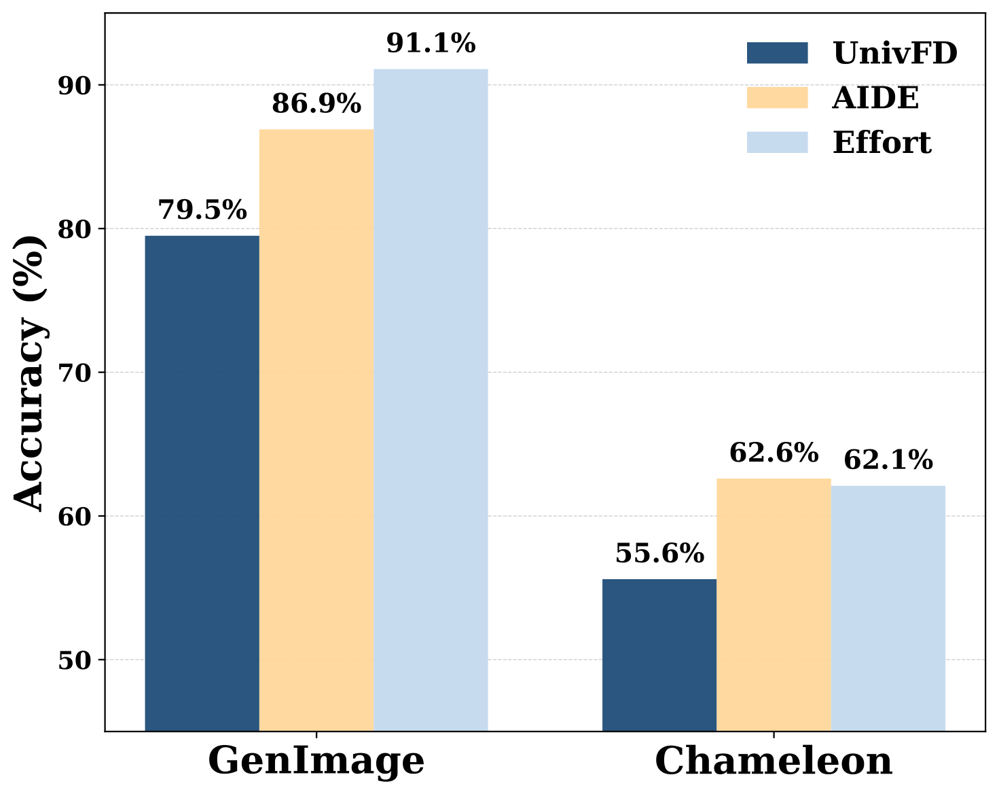
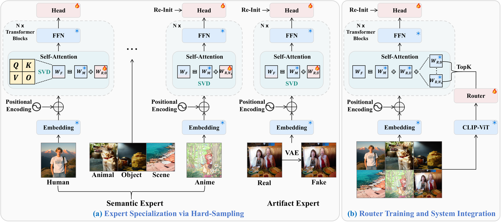
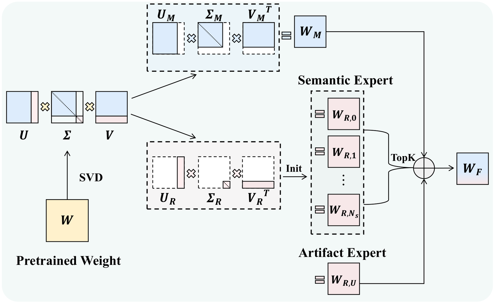
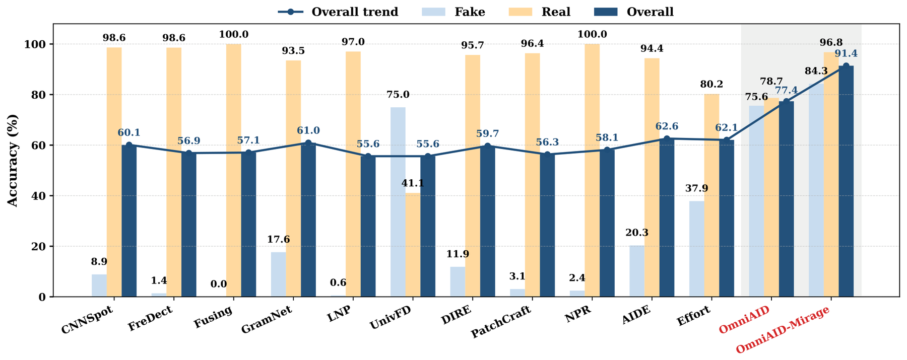
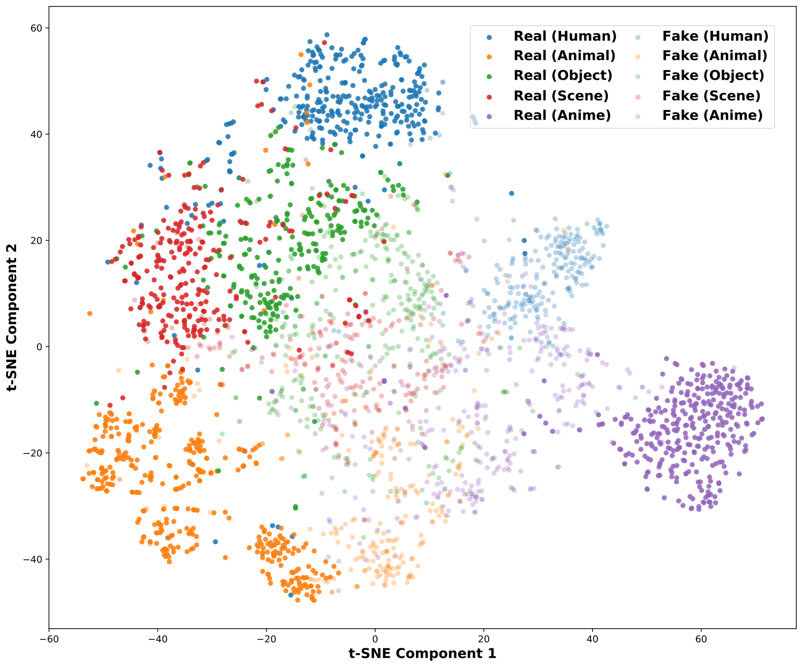
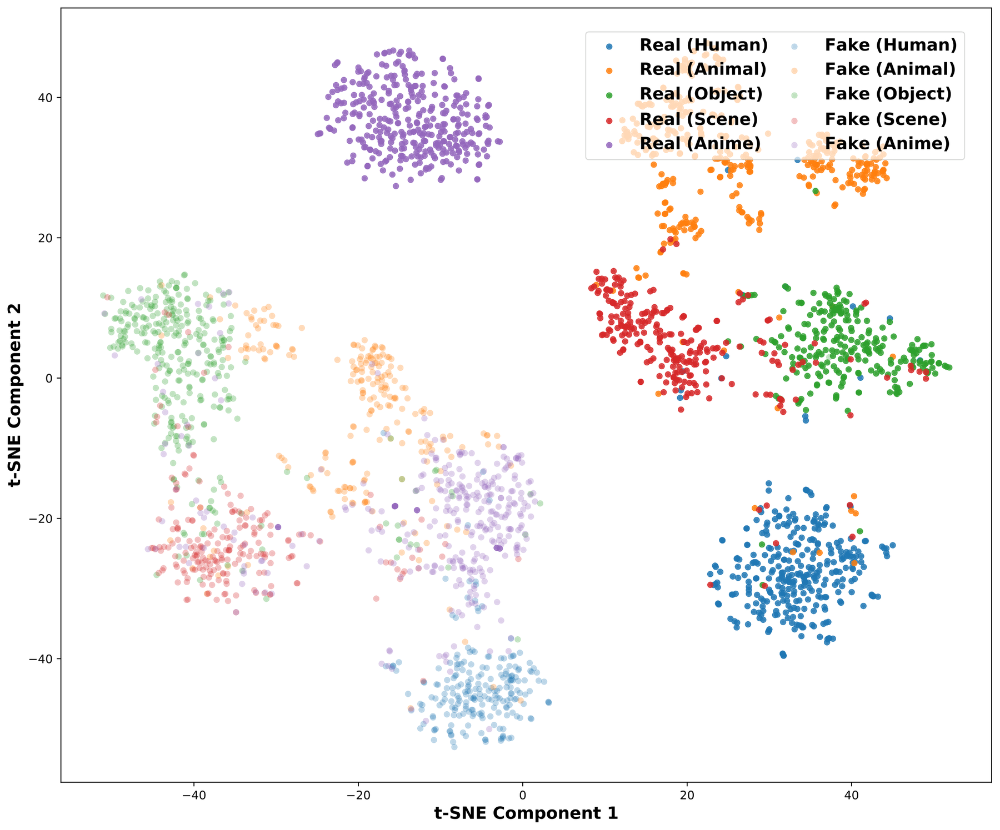
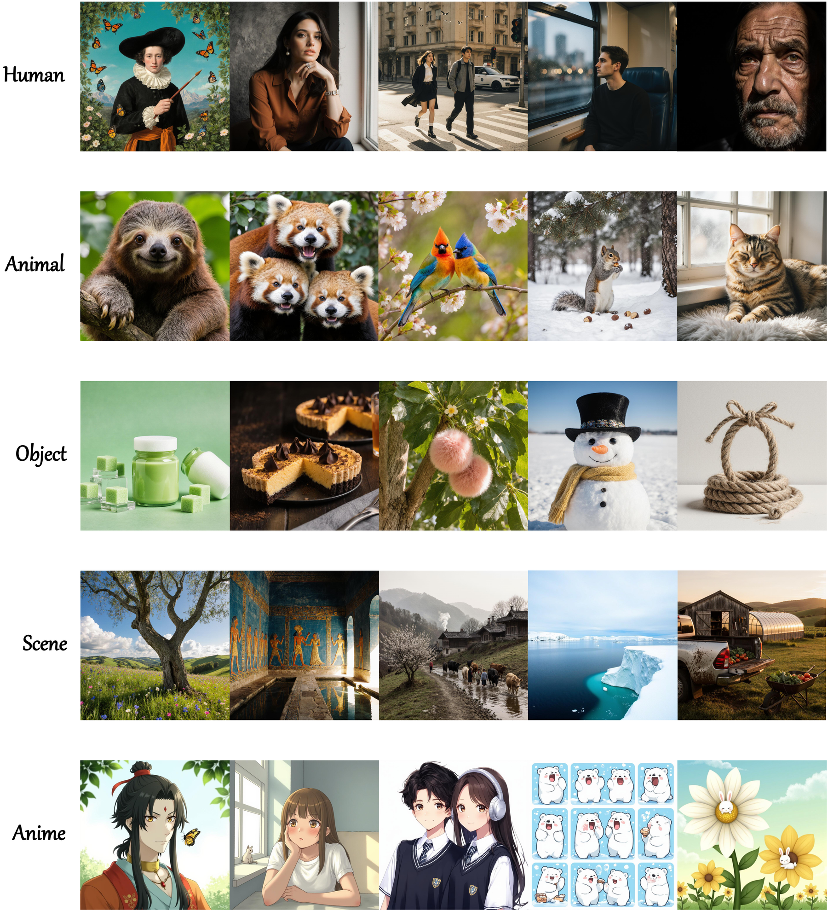

ICML 2026 · Universal AIGI Detection
OmniAID
Decoupling Semantics and Artifacts for Universal AI-Generated Image Detection in the Wild
1Shanghai AI Laboratory · 2Sun Yat-sen University · 3Tsinghua SIGS · 4Shanghai Jiao Tong University
Why OmniAID?
Universal detection needs both semantic reasoning and artifact evidence.
Previous detectors often collapse under semantic shift because they learn one entangled feature space. OmniAID explicitly separates what is generated from how it is generated, then routes each image to the most relevant evidence.
Decoupled MoEsemantic experts + always-active artifact expert
Routable evidenceinterpretable expert routing for mixed or ambiguous content
Mirage benchmarkmodern in-the-wild data for high-fidelity generators

Abstract
Universal AIGI detection by explicit decoupling
Modern image generators are increasingly photorealistic, while existing detectors often learn a single entangled representation that mixes content-dependent semantic flaws with content-agnostic generation artifacts.
OmniAID introduces a decoupled Mixture-of-Experts architecture with routable semantic experts and an always-active universal artifact expert, trained using a two-stage strategy for robust in-the-wild AIGI detection.
Motivation
Semantic gaps and outdated benchmarks limit previous detectors



Method
Two-stage decoupled training with a hybrid orthogonal MoE

Expert specialization
Semantic experts focus on domain-specific logic flaws, while the artifact expert learns content-agnostic reconstruction traces from aligned real/fake pairs.
Router integration
A global router selects the most relevant semantic experts for each input. The artifact expert is always active to provide universal forensic evidence.

Results
Robust in-the-wild detection without real/fake bias collapse

Feature analysis
Decoupled feature space and interpretable routing


Dataset
Mirage: a modern benchmark for in-the-wild threats

✓ Modern generators up to 2025
✓ In-the-wild synthetic images
✓ Semantic categories: Human, Animal, Object, Scene, Anime
✓ Held-out high-fidelity generators for testing
Citation
@article{guo2025omniaid,
title={OmniAID: Decoupling Semantics and Artifacts for Universal AI-Generated Image Detection in the Wild},
author={Guo, Yuncheng and Ye, Junyan and Zhang, Chenjue and Kang, Hengrui and Fu, Haohuan and He, Conghui and Li, Weijia},
journal={arXiv preprint arXiv:2511.08423},
year={2025}
}